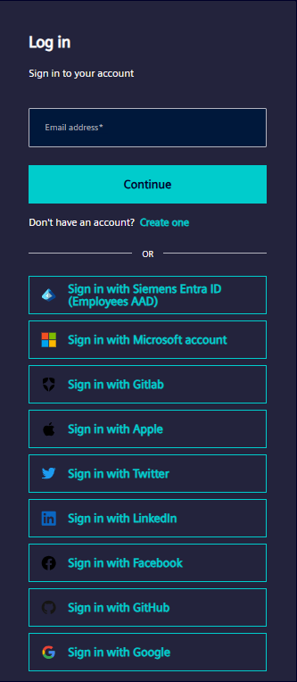
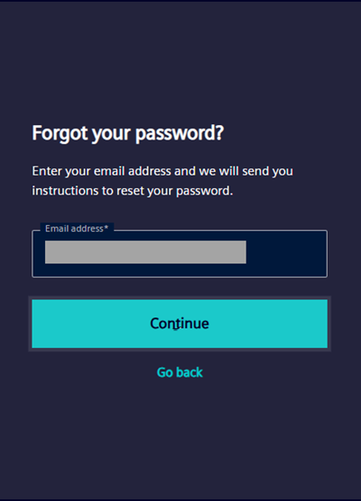
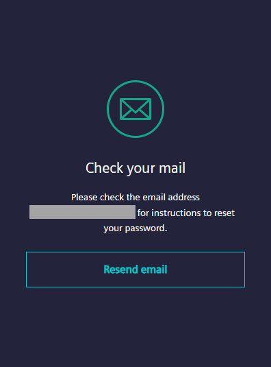
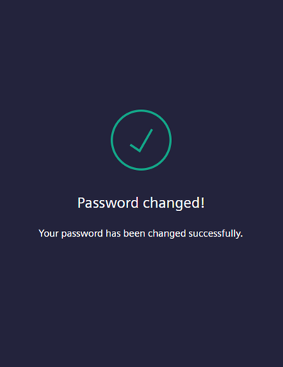

Password recovery workflow (external users)
- Open the weblink https://sp.login.siemens.com/.
- Click Log in.
- Enter the email address and click Continue.

- Click Forgot password?.
- The email address of the user displays automatically in the Email address field.

- Click Continue.
- The Check your email window displays.

- Go to your email inbox and click Reset my password.
- An external link opens in a new tab.

- Enter the new password in the New password and Re-enter new password fields and click Reset password.
- The application changes the password and sends a notification.
